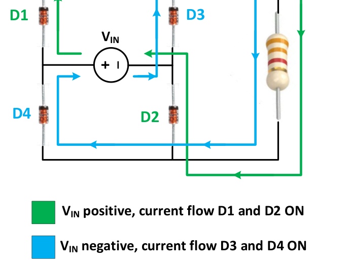
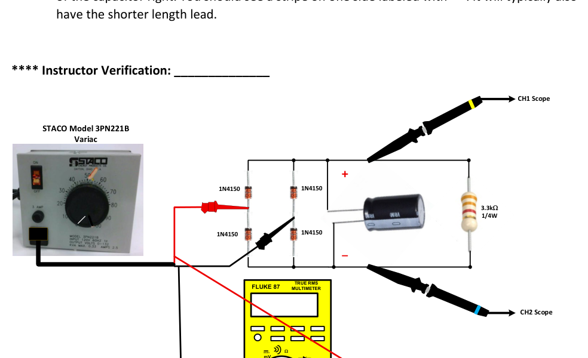
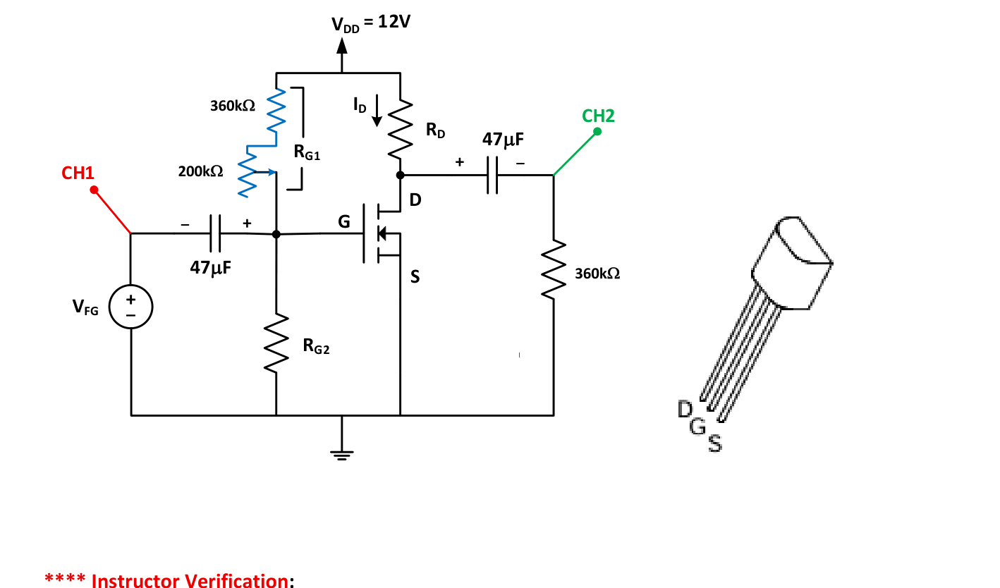
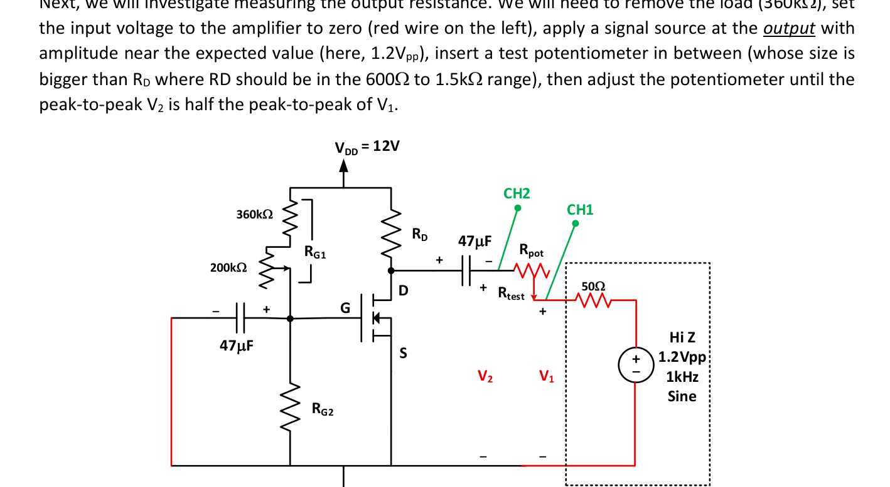
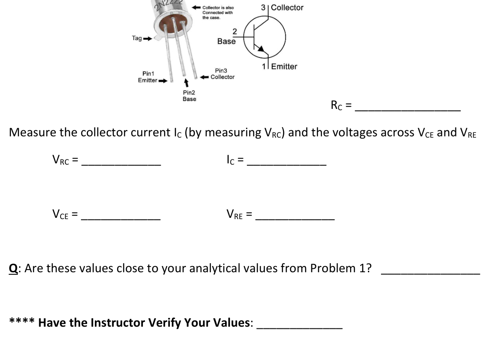
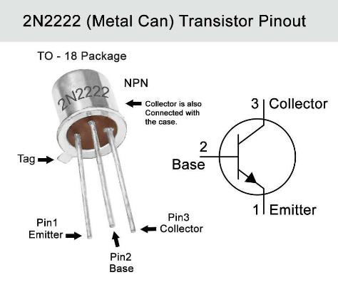

HANDS-ON BENCH & SIMULATION EXERCISES
ECE 321: Practical Exercises (PE1–PE8)
Laboratory activities and circuit simulations for practicing breadboarding, instrumentation, component characterization, and measurement techniques.
PE1: Op Amp Offset Voltage & Current PE1
NAMES:________________________
ECE321: Practical Exercise #1: “Compensating Op Amp Offset Voltages and Currents”
Discussion: We assumed infinite input resistance into the op amp terminals. This is only approximately true and so we will expect these input bias currents to create some small effect on the output. Also, due to slight device/component mismatches in the input differential amplifier, we will find that there is a small difference between the DC voltage at the “+” terminal and the “-“ terminal, which will also contribute to an output offset. Today, we will investigate how we can null these out, so that when we apply 0V into an inverting amplifier, we get 0V out!
Readying the Power Supply and Breadboard
Step 1: To internally connect and sync the two adjustable DC supplies (BK Precision), pull the upper right voltage control knob out. Turn on the supply. Adjust the control knob to output 15V on each channel (these should be adjusting together). Turn off the power as we build our circuit.
Step 2: Seat the LM741 op amp (so it straddles a gap) near the top of the board. Look for either the circle indicating pin 1 or the bite mark at the top. Make sure pin one is to the upper left looking down.
Step 3: Connect the top horizontal rail (+Vcc) to a vertical rail to the right of the op amp, then connect from there to pin 7. Connect the second from top horizontal rail (-Vcc) to a vertical rail to the left of the op amp, then connect from there to pin 4.
Step 4: Connect ground (the 4th horizontal rail from the top) to the other vertical rail to the left of the op amp.
Making an Inverting amplifier with a Gain of -100
Step 5: Collect a 1k (bro-bla-red) and 100k (bro-bla-yel) 1/4W resistor from the bins. Place the 100k resistor from the output (pin 6) to the inverting input (pin 2). Place the 1k resistor from pin 2 down to ground (so, zero input). Ground pin 3 (the non-inverting input).
Step 6: Connect your Digital MultiMeter (DMM) between the output (pin 6, so connected to one leg of the 100k resistor) and ground (the side of the 1k resistor connected to ground). Set the DMM to measure DC voltage
Collect some initial data
Step 7: Energize the DC power supply. Record the DC output voltage (it should be somewhere in the mV or 100’s of mV range and can be positive or negative, let the instructor know if it is not). We are seeing the effect of offset voltage and input bias currents together.
Output Voltage (Input grounded): ______________
We Expect: Vout=-IB-RF+1+RFR1Vos but we don’t know the polarity of IB- or Vos
Investigate Compensation
Step 8: Turn off the DC power supply. Remove the ground connection to pin 3 and replace it with a 1k resistor (the suggested value is the parallel combination of the 100k and 1k which should be very close to 1k). This will be the best value for our bias currents but our bias current effect and our offset voltage effect could be in either direction.
Step 9: Re-energize the supply and measure the new output voltage (it could be either lower or higher)
We expect Vout=IB+-IB-RF+1+RFR1Vos where, again, we don’t know the polarity of anything
Output Voltage (Input grounded, Non-inverting resistor added): ______________
**** INSTRUCTOR VERIFICATION: ____________________
Step 10: Turn off the power supply. Now we will include a voltage adjustment between pins 1 and 5 of the op amp (null offset terminals). After measuring to confirm that it is a 10k potentiometer, seat it in the breadboard to the left and down from the op amp so it’s close to the -15V supply rail. Connect one end of the potentiometer to pin 1; connect the other end to pin 5. Finally, connect the wiper arm (middle terminal) to the -15V rail. On the top is a slotted knob that you will be able to turn with an adjustment tool.
Step 11: Re-energize the power supply. Observing the DMM voltage, use the potentiometer adjustment tool to reduce the voltage to 0V. Note, if you go too far, you will see the output voltage change polarity. Record the final voltage.
Output Voltage (Input grounded, full compensation applied): ______________
**** INSTRUCTOR VERIFICATION: ____________________
Time permitting, let’s investigate the effect with an AC signal applied
Step 12: De-energize the power supply. Move the 1k resistor connected to pin 2, so it is no longer grounded but goes to a free spot on the board. We are going to apply an AC signal from the function generator there.
Step 13: Energize the function generator (FG). Hit Channel and make the Output Load -> High-Z (so, what we program to the amplitude is what we get). Adjust the amplitude to 20mVpp and leave the frequency at 1kHz. Apply this to the open end of the 1k resistor. A gain of -100 should give us an output of 2Vpp which is fine.
Step 14: Energize the scope and connect channel 1 (CH1) to the input (where you connected the FG) and channel 2 (CH2) to the output (connect it to the leg of the 100k resistor going to pin 6, the scope should already be grounded to the breadboard). Make sure the probe settings for each channel is 10x and the channel is ON. You should trigger on CH1 (though it is small). Tap Horizontal (bottom of window), Acquisition Settings, Acquisition Mode -> Average, and Number of Waveforms -> 16. Tap Trigger -> Coupling -> select HF reject. The vertical setting should be around 500mV/div and the horizontal setting to 400us/div.
Step 15: Energize the DC power supply. Energize the FG (Channel -> Output -> On). Acquire the signal on the scope. It should be going symmetrically between -1V and +1V with no unwanted DC offset.
Is the waveform symmetric? ______________
**** INSTRUCTOR VERIFICATION: ____________________
Step 16: Let’s see what happens when we remove the Null Offset compensation. Disconnect the potentiometer connection between the wiper arm and the -15V rail. Do you notice that the output becomes less symmetric?
Is the waveform symmetric? _______________
Tear Down
Step 17: Disconnect the scope. De-energize the FG. De-energize the DC power supply. Remove all parts and connection wiring that you added. Congratulations! You now know a little bit more about non-ideal aspects of op amps and how to compensate for them
PE2: Window Comparator with Op Amps PE2
NAMES:________________________
ECE321: Practical Exercise #2: “Window Comparator”
Discussion: We will be studying the LM311 Integrated Circuit. It is a dedicated voltage comparator. While it has two inputs (inverting and non-inverting) and looks similar to an op-amp, it is built to switch its output quickly between high and low logic states rather than operate in a linear amplification mode. A simple model for the LM311 is shown next. The output is very different than the LM741 op amp. It is termed an open-collector output. Here, there is a switch at the output that depends on the applied voltages at pins 2 and 3. No current flows into either pins 2 or 3.
When V2 > V3, the switch is open
When V3 > V2, the switch is closed
Normally, we connect pin 1 to ground, then pin 7 will go between ground and an open circuit. So, we must “pull-up” the output. Typically, we do this with a pull-up resistor that will go between pin 7 and a power supply voltage. Then when the LM311 switch is closed, current flows into the output. We like to limit this current below 40mA. When the switch is open, no current will flow into the LM311 output and the voltage at pin 7 will be whatever the pull-up voltage is.
The chip will also have positive and negative voltage supplies and two terminals (pins 5 & 6) where we can strobe the chip (cause it to respond to or ignore the input signals). Typically, we will operate this chip with a single supply (from 5V to 30V), ground pin 4, and leave open pins 5 and 6 so the strobe function is deactivated.
We will build and investigate the following window comparator circuit.
The resistors R1, R2, and R3 are setting up a voltage divider to give us an “upper” and a “lower” trigger point, labeled VU and VL. With the values equal, we should get VU = 3.33V and VL = 1.67V. We can obviously change these to whatever we need. Based on our logic, if Vin > VU, the upper LM311 switch is closed, otherwise it is open. For the lower LM311 chip, the terminals are flipped. So, if Vin < VL, the upper switch is closed, otherwise it is open. With VU > VL always, both internal switches can’t be closed. Thus, if the input voltage is between VU and VL (inside the window), both switches are open, no current flows through the pull-up resistor, and Vout = 5V. If the input voltage is outside of the window, then either the top or the lower LM311 switch is closed, the bottom of the pull-up resistor goes to ground, and Vout = 0V. How cool is that? We could also add in an LED if we wanted to know when we were outside of the window. For our investigation, our Vin will be a triangular signal from our Function Generator (FG).
Set Up the Breadboard
Step 1: Place two LM311 chips onto the breadboard (one above the other)
Step 2: Extend the 5V power rail from the horizontal line to a vertical rail on either side of the chips. Similarly, extend the ground rail to one of the vertical rails on the left of the chip.
Step 3: As the above diagram shows, connect pins 1 and 4 of each chip to ground. Connect each pin 8 to the 5V rail.
Step 4: Acquire the three 10kW (bro-bla-oran) resistors from the bins. Connect the first between the 5V rail and pin 2 of the upper LM311. Connect the second 10kW from pin 2 of the upper LM311 to pin 3 of the lower LM311. Connect the final 10kW resistor between pin 3 of the lower LM311 and ground.
Step 5: Connect pin3 of the upper LM311 to pin 2 of the lower LM311, then extend this out to somewhere on the breadboard where we can connect our FG input.
Step 6: Connect the two pin 7’s of the chips together, then place a 1kW (bro-bla-red) resistor between one of them and the 5V power rail. That should complete the circuit.
Ready the FG and Scope
Step 7: Let’s create a triangle waveform at 1kHz that goes between 0.5V and 4.5V (so, it has an average of 2.5V and a peak-to-peak variation of 4V). Leave the FG output off.
Channel -> Output -> Hi Z
Parameters -> Amplitude -> 4Vpp
Parameters -> Offset -> 2.5V
Step 8: We are using the fixed 5V supply of the DC power source, so it will not need any adjustments.
Step 9: Connect the FG output to serve as Vin. Connect the scope CH1 to where you connected the FG output. Connect the scope CH2 to the bottom of the pull-up resistor so it measures Vout. Make sure the scope is ON and that channels 1 and 2 are ON.
**** Have the Instructor Verify Your Circuit: _____________
Verify Operation
Step 10: Energize the DC power supply. Turn on your FG output
Channel -> Output -> On (the output light should be lit)
Step 11: If your scope is not already set for it, turn on HF rejection and do averaging. Make sure each probe is set for 10x to accommodate the 10x probe (and see the correct voltage levels)
Trigger -> Coupling -> HF Reject
Horizontal -> Acquisition Settings -> Acquisition Mode -> Average
Set the number of waveforms to 16
Step 12: Stabilize your signals. Make sure you are triggering on CH1 and have the trigger level inside of the expected waveform (between 0.5V and 4.5V). Move the 0V for each signal towards the bottom of the screen. Have your volts/div to be around 1V for each channel. Adjust your time/div so you see at least two periods. Is this what you expect? Describe what you see to the instructor or lab tech.
**** Have the Instructor Verify Your Output: _____________
Step 13: Once approved, print off your scope screen. List the procedure here
Step 14: We will likely use this setup to illustrate LED biasing next time. So leave it connected. Turn off the FG output. Turn off the DC power supply. Attach your scope printoff to this handout.
Step 15: What combination of resistors R1, R2, and R3 would give you VU = 3V and VL = 1V?
PE3: Multisim Diode Voltage Tripler PE3
NAMES: ___________________________
ECE321 Practical Exercise #3: “Multisim: Voltage Tripler + Full-Wave Rectifier”
Discussion: We will be using Multisim to study some applications which include diodes
Ex. 1: Voltage Tripler
As the name suggests, this circuit takes a given voltage level, 5V, and produces a new level that is about three times bigger. When voltage source V1 is zero, capacitor C2 builds up to 5V from V2. When V1 steps up to 5V, this voltage adds to C2 and charges the capacitor labelled C1. We expect the voltage across C1 to be about 10V. This process continues with C3 going to 10V then being bumped up by 5V from V1. The steady-state voltage across C4 should be about 15V. Cool huh? Build the following circuit. The parts are found here
Sources -> Power_Sources -> DC_Power
Sources -> Power_Sources -> Ground
Sources-> Signal_Voltage_Sources -> Pulse_Voltage
Basic -> Capacitor
Diodes -> Schottky_Diode -> 1N5830
For the pulse-voltage source (double-click): Initial value = 0; Pulsed value = 5; Pulse width = 0.5ms; Period = 1ms
If you wish to see your node (net) numbers:
Options -> Sheet properties -> Sheet visibility -> Net names: Show all
Recall, to run a transient simulation
Simulate -> Analysis and simulation -> Transient
Analysis Parameters
Initial conditions: Set to zero
Start time: 0
End time: 0.2
Maximum time step: 1e-06
Output
V(4) and V(6) [see my diagram, your nodes may be different]
Click RUN (or save and press the green right-pointing arrow at the top)
Add a grid; add cursors; measure these node voltages at 0.2s. They should be close to 10V and 15V, with any difference being because of the non-zero voltage drops across the diodes. Print off your circuit and output waveform as proof of completion.
Ex. 2: Full-Wave Bridge Rectifier
A full-wave rectifier uses 4 diodes to convert a sinusoid into a pulsing uni-polarity signal.
Build the following circuit.
Diodes -> Diodes_Virtual -> Diode
Sources -> Signal_Voltage_Sources -> AC_Voltage
Sources -> Power_Sources -> Ground
Basic -> Resistor -> 24 ohm
For the voltage source V1, set the peak voltage to 24V and the frequency to 60Hz
To run a transient simulation
Simulate -> Analysis and simulation -> Transient
Analysis Parameters
Initial conditions: Set to zero
Start time: 0
End time: 0.1
Maximum time step: 1e-06
Output
V(3) and IV(1)) [see my diagram, your nodes may be different]
Click RUN (or save and press the green right-pointing arrow at the top). We should see that the output voltage is a bit lower than 24V because of the diode drops. Diodes D1 and D2 conduct when V1 is positive, then diodes D3 and D4 conduct when V1 is negative. The source voltage current I(V1) is directed into the + side and we note is sinusoidal. Typically, to make this output voltage more steady, we would add a capacitor across the 24ohm load. Add a 470uF capacitor across the output resistor and see how it changes the output voltage and input current. Document the size of the output voltage ripple. If we wish to make it smaller, we will need a bigger capacitance value. Print off this final figure.
PE4: Diode Characterization with Curve Tracer PE4
ECE321 Practical Exercise #4v2 F26
Discussion: In Lab 1, we used our variable DC supply, a collection of resistors, and our DMMs to generate data to model our 1N4150 diode over a nice span of currents. We then used the data together with a guess at the device’s parasitic resistance (RP) to solve for a best-fit of the parameters IS and “n”. The challenge was that we needed to verify that the current-limit resistance values we chose gave us realizable source voltages and acceptable resistor power dissipation. Wouldn’t it be sweet if we could vary the voltage across the diode in a very precise manner and measure that voltage and the resultant current? Yes, it would be. That’s what the Keithley 2604B Source Meter does for us
The cool thing too is that we will not need to mess with the 2604B menus or write specialty code. The Keithley Kickstart Software will allow us to configure settings in an easy GUI, then create both data tables and graphs that we can export via our thumb drive.
Step 1: Connect the 1N4150 diode between the two posts of the 8101-PIV test fixture. You press down exposing the hole, then slide the lead comfortably in as shown below. Next, connect the CH A BNC output of the Keithley 2604B to the SMU 1 input of the fixture. The Return for both channels (labeled RET) is connected to SMU 4.
Step 2: Make sure the Keithley 2604B unit is ON. Use the mouse to go to the monitor and double-click on the Kickstart software.
Select My2604B
Then select IV Characterizer. This should open up a Settings panel similar to what is below
Step 3: Since we are not connecting anything to SMU-2, uncheck the box in its top right to disable that control channel. Go up to SMU-1, highlight SMU-1 and type in “VD” as this channel will control our applied diode voltage.
Step 4: With the top box (now labeled VD) selected, we can now create our experiment
Type: keep this as DC (we will apply DC voltages, not pulsed voltages)
Function: keep this Voltage (we are controlling the applied voltage)
Mode: Sweep (we will apply a range of voltages as specified)
Type: Linear
Start: 0V
Stop: 0.95V
Measure Area: Check both Voltage and Current
The rest can be set at its default
Step 5: Now go to the blue Common Settings window on the right
Sweep Points: Let’s set that to 96 so that (0.95V – 0V)/(96 – 1) = 10mV will be our step size. You should see this change in the yellow window under Stop.
Stepper: None (Stepper is used if we want to generate several curves for say different values of VGS)
The rest can stay their default values
Step 6: OK, we are ready to RUN. Press the RUN value at the lower left of the screen. You should see the progress bar going to 100%. Much nicer than our manual data collection!
Step 7: At the top of the screen, go from Settings to Graph
The x-axis should be VD and the y-axis should be ID (the current)
Click the y-axis variable, you should be able to switch to a logarithmic scale. This is cool, because we see the linear nature of the curve (Lab 1!) and at high currents we see the roll off dur to the effect of RP.
Step 8: Toggle the top menu from Graph to Table
Now you should see all 96 data points. Very sweet!
Step 9: Let’s export these results
At the bottom of the screen you should see a box with a right-pointing arrow. Click it.
Check both the Table and Graph boxes so we get both (choose XLSX for the Table so we get an excel file)
De-select the Automatically export new runs
Insert your blue thumb drive from your oscilloscope into the open USB port on the Nuk computer (behind the monitor on the upper left).
Do the export and make the thumb drive your destination
Take the thumb drive and attach it to your computer (it’s safe) and download the images and excel file (we will need to do this for Lab 2)
Step 10: OK, at this point, we could then move the data from excel over to Matlab and do similar post-processing that we did in Lab 1. We won’t. Close the Kickstart program. Disconnect the CH A BNC connectors from the fixture. Remove the diode. Turn off the Keithley 2604B unit. Print off one of your IV-plots and hand that in with your names on it as proof of completion. You would need to repeat the export process if you wish to collect both graphs.
PE5: Full-Wave Rectifier with Filter PE5
1 NAMES:__________________________________ ECE321: Practical Exercise #5: “Full-Wave Rectifier with Filter” Discussion: The Function Generator has a noticeable loading effect because of its 50Ω output resistance. The measured output values diverge from their programmed peak-to-peak output or offset depending on how much current we are drawing. So, the FG is generally not a good source for rectifier applications where we might want to deliver 100’s of mA. Today, we will introduce a variac which is an adjustable 60Hz AC supply. Think of it as a transformer with a variable tap on the output. Let’s build the following circuit [Keep the variac dialed down and OFF until your circuit has been verified]. 1N4150 1N4150 1N4150 1N4150 3.3kΩ 1/4W CH1 Scope CH2 Scope STACO Model 3PN221B Variac FLUKE 87 TRUE RMS MULTIMETER OFF V~ V A mAµA VΩ COM mV Ω mA ~ A µ A ~ 400mA FUSED 10A MAX FUSED 1000V Note, the cathode of the 1N4150 diode is indicated by the bar. The output of the variac has a set of mini-grabbers that are connected to the center of each diode leg and a set of banana plugs that go to the Fluke 87 DMM so we can track the applied AC rms voltage. Curiously, we will need to measure the voltage with our scope at both the top and bottom of the load resistor. Why? That will be explained on the next page. **** Instructor Verification: ______________ 2 Floating Scope Operation There is a measurement subtlety involved with this circuit. The ground of the scope must be left floating (not connected) and then in order to measure the output voltage, we will need to use both channels 1 and 2 (as shown above) to measure the voltages on either side of the 3.3kΩ load resistor. Then, we can get the output by using the scope’s math function and taking the difference between CH1 and CH2 (CH1 – CH2). The issue is shown below with an incorrect setup. Note, the scope’s ground is incorrectly connected to the bottom of the rectifier. The problem is indicated by the red short-circuit current path. Note, the neutral of the variac output is connected to physical ground at the power panel. The scope’s ground terminal is also connected to ground. What results is the lower left diode D4 has the variac voltage directly across it with nothing limiting the current, so when it is forward biased, it will die a gruesome death. You will also push a lot of current through the scope’s ground pin which risks its safety as well! +_ NEUTRAL HOT GROUND POWER PANEL SHORT CIRCUIT PATH THRU D4 SCOPE GROUND CONNECTION TO CIRCUIT D1 D2 D3 D4 So, we have to leave the scope “floating” and create the output voltage mathematically. Scope Settings: • Both channels should be DC coupled with a 10x setting for our probe • Set HF rejection (Trigger Menu); averaging (Horizontal Menu -> Acquisition) • Both channels on ~5V/div; Trigger on CH1; • Choose math function and create CH1 – CH2; have the Math signal 0V toward the bottom of the screen • Add measurements for the Math channel of peak-to-peak, mean, and minimum 3 Variac • Make sure the DMM is ON and measuring AC voltage (~) • Switch the variac ON and slowly dial it up until the DMM measure 12Vrms • Make any scope adjustments so you can see the three signals and you have a stable display (the math channel should be a full-wave rectified signal) • Record the peak-to-peak, mean, and minimum values here Vpp = ______________ Vmean = _______________ Vmin = _____________ Where is current flowing?

4 Filtering • Turn OFF the variac but do not dial it back down to 0% • Add in a 4.7uF 50V electrolytic capacitor as shown below. Note, it is essential to get the polarity of the capacitor right. You should see a stripe on one side labeled with “-“. It will typically also have the shorter length lead. **** Instructor Verification: ______________

• Re-energize the variac. You should see a different signal on the scope. Make sure the signals are all visible and you have a stable display. Record the measured values. Vpp = ______________ Vmean = _______________ Vmin = _____________ 5 • Turn OFF the variac. Swap the 4.7uF capacitor for a 47uF 50V capacitor. Make sure its polarity is correct. Re-energize the variac. We should see the ripple voltage getting smaller. Vpp = ______________ Vmean = _______________ Vmin = _____________ One interesting thing to notice is the flattening of the top of the rectified signal. This is not due to the variac but because of the building voltage itself. Due to the large number of electronic devices connected to the building grid with rectifiers, we see a phenomenon as shown next Note, the current only flows from the source for a short period of time. That current interacting with the source impedance creates a drop at the top of the sinusoidal input, hence the flattening that we see! • De-energize the variac and dial its output back to 0% 6 Full-Wave Rectifier Considerations • Current Distribution: In a standard full-wave bridge rectifier, each diode conducts for only half of the AC cycle. • Average Current per Diode: The average current flowing through each individual diode is roughly half of the total DC load current. • Design Limit: Therefore, the total DC output current of the full-wave rectifier should be kept to a maximum of 400 mA to 600 mA total, ensuring that the current through any single 1N4150 diode stays within its 200 mA–300 mA average limit (as specified on the datasheet) • Voltage Limit: The 1N4150 has a maximum repetitive peak reverse voltage of 50V (what it can safely block while it is OFF). So, we cannot apply a variac voltage beyond that. Calculation: Using the mean output voltage you just measured, a. calculate the mean load current using the 3.3kΩ load resistor. How close are we to the 400mA limit? b. What could we lower the load resistor to in order to draw 400mA? c. What is the peak output voltage? How close are we to the peak reverse voltage limit of our diode (described above)? d. Since we get two diode drops for both the positive and negative input voltage, we can estimate the peak of our filtered output by (recognizing we have some flat-topping) Vmax = √2 × 12𝑉𝑉𝑟𝑟𝑟𝑟𝑟𝑟−2𝑉𝑉𝐷𝐷= 16.97 −2 × 0.66𝑉𝑉= 15.65𝑉𝑉 The ripple can be estimated by ∆𝑉𝑉𝑜𝑜,𝑝𝑝𝑝𝑝= 𝑉𝑉𝑚𝑚𝑚𝑚𝑚𝑚𝑚𝑚200𝑅𝑅𝑅𝑅 ൗ . See how well this ripple equation matches our peak-to-peak ripple
PE6: Common Source Transistor Amplifier PE6
1 NAMES:__________________________________ ECE321: Practical Exercise #6: “Common Source Transistor Amplifier” Discussion: We will explore the “design” and testing of a Common Source NMOS amplifier today. The starting point circuit is given next D S G VDD RG1 RG2 RD VG = RG2 + RG2 RG1 VCC ID VD = VCC - RD ID = VGS Vov= VGS - Vt Note, we have a voltage divider at the gate to establish the voltages VG = VGS. The source is grounded, so part of VDD will be across RD and the rest will be across VDS. We would like to place the VDS operating point (Q) half way between VDD and 0V in order to facilitate a large gain without either going into cutoff (at the top) or triode (at the bottom) of the Voltage Transfer Characteristic (VTC). Let’s try and achieve a voltage gain of 30 while setting VDSo at 6V and VDD = 12V. Assuming λ = 0, we then have that ⌊𝐴𝐴𝑣𝑣⌋= 𝑔𝑔𝑚𝑚× 𝑅𝑅𝐷𝐷= 𝐾𝐾𝑛𝑛× 𝑉𝑉𝑜𝑜𝑜𝑜× 𝑅𝑅𝐷𝐷= 30 (1) 𝑉𝑉𝐷𝐷𝐷𝐷= 𝑉𝑉𝐷𝐷𝐷𝐷−𝐼𝐼𝐷𝐷× 𝑅𝑅𝐷𝐷= 12𝑉𝑉− 1 2 𝐾𝐾𝑛𝑛𝑉𝑉𝑜𝑜𝑜𝑜2 × 𝑅𝑅𝐷𝐷= 6𝑉𝑉 (2) Let’s assume that Kn = 0.05A/V2 and Vt = 1.75V. Solve (1) for Vov RD then plug that into (2) to solve for Vov. Finally return to your first result and find RD. Note, we do not know how well these Kn and Vt parameters match our transistor! 𝑉𝑉𝑜𝑜𝑜𝑜× 𝑅𝑅𝐷𝐷= ______________ 𝑉𝑉𝑜𝑜𝑜𝑜= _____________ 𝑅𝑅𝐷𝐷= _________________ Compute VGS from the over-drive voltage and the assumed threshold voltage 𝑉𝑉𝐺𝐺𝐺𝐺= _____________ **** Instructor Verification: ___________________ 2 We next must turn our VGS value into values for RG1 and RG2. Note, 𝑉𝑉𝐺𝐺𝐺𝐺= 𝑅𝑅𝐺𝐺2 𝑅𝑅𝐺𝐺1 + 𝑅𝑅𝐺𝐺2 × 𝑉𝑉𝐷𝐷𝐷𝐷= 1 𝑅𝑅𝐺𝐺1 𝑅𝑅𝐺𝐺2 + 1 × 𝑉𝑉𝐷𝐷𝐷𝐷 With some algebra 𝑅𝑅𝐺𝐺1 𝑅𝑅𝐺𝐺2 = 𝑉𝑉𝐷𝐷𝐷𝐷 𝑉𝑉𝐺𝐺𝐺𝐺−1 (3) Given we choose RG2 = 100kΩ, find the required RG1 using (3) RG1 = _________________ To give us the ability to adjust this value let’s realize it using the series combination of 360kΩ resistor and a 200kΩ potentiometer which we can adjust. Build the circuit where we now add in coupling capacitors (note the polarities, where the higher DC voltage gets the “+” sign) and a load resistor. Pre-set the potentiometer to the value you calculated above. Give yourself room to measure the voltage across RD and the voltage at the NMOS gate. Connect CH1 of the scope to the input and CH2 to the output. Set the FG for Hi Z output, 40mVpp, 1kHz, sinusoid. The 12V is realized with the DC power supply. Keep the supply and FG off until the circuit is verified. Measured RD: ______________

**** Instructor Verification: ___________________ 3 Turn on the DC power supply (make sure it is 12V) and energize the FG. Stabilize the signals on the scope (set HF rejection and averaging as usual). With the DMM, measure the DC voltage at the NMOS gate. If it is not exactly the value you desired, tweak the potentiometer setting. Measure VRD with the DMM. Then, set the scope to measure the input and output peak-to-peak values. Record the following: VGS = ______________ VRD = ________________ AV = _________________ You will likely find that VRD does not equal our desired 6V and Av is not 30. This is because our parameters Kn and Vt may not match our transistor and our circuit is not insensitive to the variations. So, let’s use our data to improve our estimates. Change VGS (using the potentiometer) until VRD = 6V. Record VGS and the new gain VGS = ______________ VRD = ________________ AV = _________________ Calculate the drain current from Ohm’s Law ID = ______________ Using ⌊𝐴𝐴𝑣𝑣⌋= 𝐾𝐾𝑛𝑛× 𝑉𝑉𝑜𝑜𝑜𝑜× 𝑅𝑅𝐷𝐷 , knowing RD compute Kn x Vov. then substitute into the saturation drain current equation to solve for Vov 𝐼𝐼𝐷𝐷= 1 2 × 𝐾𝐾𝑛𝑛× 𝑉𝑉𝑜𝑜𝑜𝑜× 𝑉𝑉𝑜𝑜𝑜𝑜 With Vov and your measured VGS, compute the threshold voltage Vt Kn Vov= ______________ Vov = ________________ Vt = _________________ Finally, compute a new value for Kn from Kn Vov now knowing Vov Kn = ______________ **** Instructor Verification: ___________________ Repeat the original design with the new values of Kn and Vt (see page 1). 𝑉𝑉𝑜𝑜𝑜𝑜× 𝑅𝑅𝐷𝐷= ______________ 𝑉𝑉𝑜𝑜𝑜𝑜= _____________ 𝑅𝑅𝐷𝐷= _________________ Compute VGS from the over-drive voltage and the assumed threshold voltage 𝑉𝑉𝐺𝐺𝐺𝐺= _____________ 4 And adjust the required value of RG1 RG1 = _________________ Modify the circuit appropriately (new RD and reset potentiometer). Energize and repeat your measurements Record the following: VGS = ______________ VRD = ________________ AV = _________________ Tweak the potentiometer until VRD = 6V and record the data points one last time VGS = ______________ VRD = ________________ AV = _________________ **** Instructor Verification: ___________________ DO NOT disassemble your circuit as we will use it next time to explore measuring input and output resistance!
PE7: Measuring Output Resistance (Rout) for CS Amp PE7
1 NAMES:__________________________________ ECE321: Practical Exercise #7: “Measuring Ro for Common Source Amp” Discussion: We have been examining a common source amplifier without any RS negative feedback to compensate for parameter variations. We have seen that the gain and operating point can change a lot given differences in Vt and Kn going from one device to another.
Next, we will investigate measuring the output resistance. We will need to remove the load (360kΩ), set the input voltage to the amplifier to zero (red wire on the left), apply a signal source at the output with amplitude near the expected value (here, 1.2Vpp), insert a test potentiometer in between (whose size is bigger than RD where RD should be in the 600Ω to 1.5kΩ range), then adjust the potentiometer until the peak-to-peak V2 is half the peak-to-peak of V1.

**** Instructor Verification: ___________________ 2 Turn on the DC power supply (make sure it is 12V; it must be ON for the circuit to look like its amplifier model!) and energize the FG. First (and always), measure the DC gate voltage to ensure it is in the 2V to 2.3V range so the transistor is ON. If you need to reset the circuit, adjust the potentiometer in the gate so that the voltage across RD is about 6V. Stabilize the signals on the scope (set HF rejection and averaging as usual). When you are content with your V2pp measurement, remove the potentiometer and measure Rtest. V1pp = ______________ V2pp = ________________ Rtest = _________________ We could also have just picked a fixed test resistor near RD and put that into the circuit. The voltages are related by the following, where Rtest is the potentiometer set value:
We can rearrange both sides:
Solve for the resistor ratio:
Then finally compute Rout:
Now we do not need to be precisely at V1pp/2 but get close enough. Compute Ro Ro = ____________________________ The keys to this measurement are • The input voltage port, Vi, must be replaced by a short to ground • The DC supplies to the amplifier must be ON • The potentiometer or test resistor at the output should be close to the size of RD • You must measure both the terminal voltage of the FG and the voltage Vi
PE8: Bipolar Junction Transistor (BJT) Biasing PE8
1 NAMES:________________________ Section: __________ ECE321: Practical Exercise #8: “BJT Biasing” Discussion: We will be studying the differences in biasing a Bipolar Junction Transistor (BJT) versus a FET. We will consider a similar 4-legged resistor biasing circuit as shown below. The Emitter resistor RE serves a function similar to RS in the common source amplifier topology: providing negative feedback and stabilizing the operating point for variations in transistor parameters. We can substitute the DC model of the BJT into that circuit then perform a Thevenin Equivalent on the components on the Base- side to give the circuit below on the right. Note, we are using a Constant-Voltage-Drop model for the base-emitter diode.

Problem 1: Given the following circuit parameters and transistor beta, analytically find the operating point for the circuit: VCC = 15V, RB1 = 16kΩ, RB2 = 10kΩ, RC = RE = 1.6kΩ, and βDC = 250. V0 = VBE. Vth = ______________ Rth = __________________
2 Problem 2: Build this circuit on your breadboard using the 2N2222 NPN transistor in a TO-18 package. Note in the picture below, the emitter is the terminal closest to the tab on the can. Measure RC.

RC = ________________ Measure the collector current IC (by measuring VRC) and the voltages across VCE and VRE VRC = ____________ IC = ____________ VCE = ____________ VRE = ____________ Q: Are these values close to your analytical values from Problem 1? _______________ **** Have the Instructor Verify Your Values: _____________ Problem 3: Let’s next try and re-engineer the operating point so we achieve: VRC = VCE = 0.4VCC, VRE = 0.2VCC with IC = 1mA. Keep VCC = 15V. [Note, VBE is the assumed voltage drop base to emitter] IB = IC/βDC = ____________________ IRB1 = 50 IB = _____________________ RC = VRC/IC = _____________________ -> Closest Standard Value = ___________ RE = VRE/(IC + IB) = _____________________ -> Closest Standard Value = ___________ VRB2 = VBE + VRE = _____________________ IRB2 = IRB1 – IB = _____________________ RB2 = VRB2/IRB2 = _____________________ -> Closest Standard Value = ___________ RB1 = (VCC – VRB2)/IRB1 = ______________________ -> Closest Standard Value = ___________ **** Have the Instructor Verify Your Values: _____________ 3 Problem 4: Swap in the new values for RC, RE, RB1, and RB2 to your circuit and experimentally confirm (measure) the new operating point values (with your DMM) RC = ____________ VRC = ____________ IC = ____________ VCE = ____________ VRE = ____________ **** Have the Instructor Verify Your Values: _____________ Problem 5: Recompute your operating point (for Problem 3, calculate IC and VCE like page 1) if your βDC increases to 400. Does it change appreciably? Tear down your circuit and return all parts to their bins.